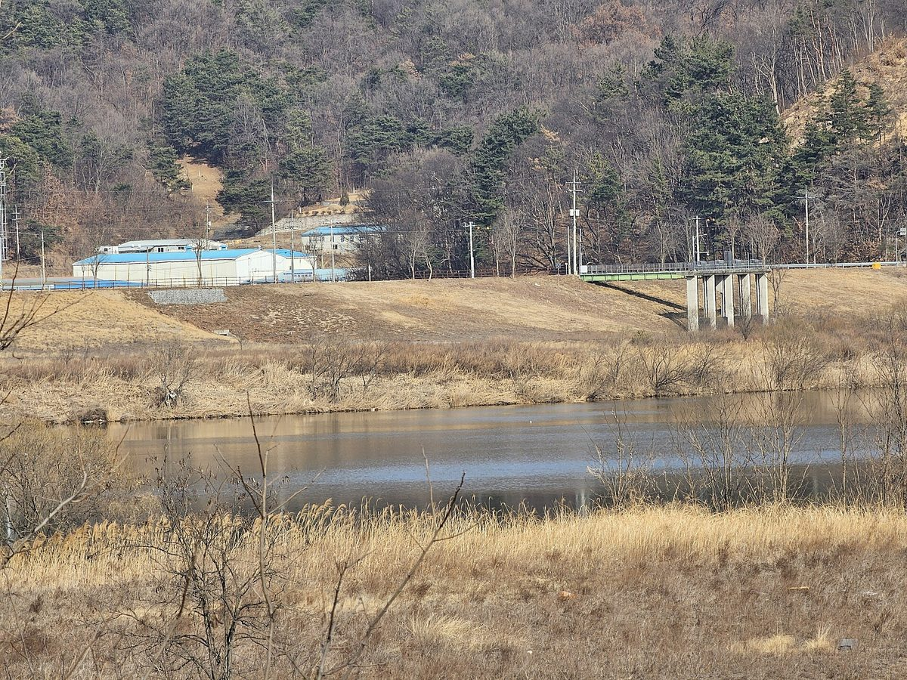

낙동강수계관리위, 상수원 규제지역 15개 지자체 재생에너지 25개 사업에 100억 원 지원

2027년부터 특별지원사업에 재생에너지 분야 신설…햇빛소득마을 9개 사업에 81억 원, 가구별 설비 11개·마을 공동시설 히트펌프 5개
낙동강 상수원 보호 때문에 규제를 받는 지역의 주민들이 마을에서 만든 전기로 소득을 얻도록 돕는 재생에너지 사업에 수계기금이 쓰인다. 낙동강수계관리위원회는 '2027년 낙동강수계 재생에너지 특별지원사업'으로 15개 지자체의 25개 사업을 골라 모두 100억 원을 지원하기로 했다고 20일 밝혔다. 위원회는 규제지역 주민을 위한 특별지원사업에 2027년부터 재생에너지 분야를 새로 넣었고, 이번 공모에는 16개 지자체가 29개 사업을 신청했다. 유형별로는 마을공동체가 태양광을 설치·운영해 전력 판매 수익을 주민과 나누는 햇빛소득마을 조성 9개 사업(사천시·양산시·군위군·경산시·청도군 등)에 81억 원, 주택에 태양광이나 히트펌프를 달아 주는 가구별 지원 11개 사업에 16억 원, 마을회관·경로당 냉난방 설비를 재생에너지 설비로 바꾸는 5개 사업에 3억 원이 배정됐다. 이형섭 낙동강유역환경청장은 이날 햇빛소득마을 대상지인 사천시 물빛여가공원과 흥사저수지를 둘러보고, 예산이 확정되면 지자체와 마을이 협력해 사업을 차질 없이 추진하고 "지원 효과가 주민에게 돌아가도록 해달라"고 당부했다.
시민에너지 관점
81억 원이 9개 햇빛소득마을 사업에 배정돼 사업당 평균 9억 원 남짓이 돌아가는 만큼, 상수원 규제로 개발이 묶인 마을에는 적지 않은 종잣돈이 된다. 기금으로 지어 주는 설비라면 주민은 혜택을 받는 쪽에 머물 수 있다는 우려도 나올 수 있지만, 마을 협동조합이 출자하고 운영과 수익 사용을 스스로 결정하면 기금은 한 번 쓰고 끝나는 보상이 아니라 마을이 키워 갈 자산의 바탕이 된다. 주민이 전기를 쓰기만 하는 사람이 아니라 발전소의 주인이 될 때 규제로 잃은 기회를 지역 안에서 되찾을 수 있다. 위원회와 지자체는 예산이 확정되기 전에 협동조합 지분과 수익 사용 원칙부터 사업 조건으로 분명히 정해 두어야 한다.
출처: 뉴스핌 2026-10-20 남경문 원문 보기
洛東江水系管理委員会、上水源規制地域の15自治体の再生可能エネルギー25事業に100億ウォン支援
2027年から特別支援事業に再エネ分野を新設…太陽光所得村9事業に81億ウォン、世帯別設備11事業・村の共同施設のヒートポンプ5事業
洛東江（ナクトンガン）の上水源保護のために規制を受けている地域の住民が、村でつくった電気で所得を得られるよう後押しする再生可能エネルギー事業に、水系基金が充てられる。洛東江水系管理委員会は「2027年洛東江水系再生可能エネルギー特別支援事業」として15自治体の25事業を選び、計100億ウォンを支援すると20日に明らかにした。委員会は規制地域の住民向け特別支援事業に2027年から再生可能エネルギー分野を新たに加え、今回の公募には16自治体が29事業を申請した。類型別では、村の共同体が太陽光を設置・運営して売電収益を住民と分かち合う太陽光所得村づくりの9事業（泗川市・梁山市・軍威郡・慶山市・清道郡など）に81億ウォン、住宅に太陽光やヒートポンプを設置する世帯別支援の11事業に16億ウォン、村の集会所や敬老堂の冷暖房設備を再エネ設備に替える5事業に3億ウォンが配分された。洛東江流域環境庁のイ・ヒョンソプ庁長はこの日、太陽光所得村の対象地である泗川市のムルビッ余暇公園と興沙貯水池を視察し、予算が確定すれば自治体と村が協力して事業を滞りなく進め、「支援の効果が住民に届くようにしてほしい」と求めた。
市民エネルギーの視点
81億ウォンが9つの太陽光所得村事業に配分され、1事業あたり平均9億ウォン余りが回ることになり、上水源規制で開発が制約されてきた村にとっては小さくない元手になる。基金で建ててもらう設備なら住民は恩恵を受ける側にとどまるとの懸念もありうるが、村の協同組合が出資し、運営と収益の使い道を自ら決めれば、基金は一度使えば終わる補償ではなく、村が育てていく資産の土台になる。住民が電気を使うだけの存在ではなく発電所の所有者になるとき、規制で失った機会を地域の中で取り戻すことができる。委員会と自治体は予算が確定する前に、協同組合の持ち分と収益の使い道の原則を事業の条件として明確に定めておくべきだ。
出典: Newspim 2026-10-20 Nam Kyung-moon 原文を読む
洛东江水系管理委员会向水源地管制地区15个地方政府的25个可再生能源项目提供100亿韩元支持
2027年起特别支援项目新增可再生能源领域…阳光收入村9个项目获81亿韩元，另有11个家庭设备项目和5个村庄公共设施热泵项目
水系基金将用于帮助因保护洛东江水源而受到管制的地区居民，利用村里自产的电力增加收入的可再生能源项目。洛东江水系管理委员会20日表示，已选定15个地方政府的25个项目作为"2027年洛东江水系可再生能源特别支援项目"，共提供100亿韩元支持。委员会从2027年起在面向管制地区居民的特别支援项目中新增可再生能源领域，此次公开征集共有16个地方政府申报了29个项目。按类型看，由村庄共同体安装和运营太阳能设施、与居民分享售电收益的阳光收入村建设项目共9个（泗川市、梁山市、军威郡、庆山市、清道郡等），获81亿韩元；为住宅安装太阳能或热泵的家庭支援项目11个，获16亿韩元；把村民会馆和敬老堂的冷暖设备更换为可再生能源设备的项目5个，获3亿韩元。洛东江流域环境厅厅长Lee Hyung-seop当天视察了阳光收入村项目地泗川市Mulbit休闲公园和兴沙水库，要求预算确定后地方政府与村庄合作顺利推进项目，"让支援效果真正惠及居民"。
市民能源视角
81亿韩元分配给9个阳光收入村项目，平均每个项目约9亿多韩元，对因水源管制而发展受限的村庄来说是一笔不小的启动资金。有人可能担心，由基金代建的设施会让居民只停留在受益者的位置；但如果村庄合作社出资，并自行决定运营和收益用途，基金就不是用完即止的补偿，而会成为村庄不断培育的资产基础。当居民不只是用电的人，而是成为发电站的主人时，就能在地方内部找回因管制而失去的机会。委员会和地方政府应在预算确定之前，先把合作社持股和收益使用原则明确写进项目条件。
来源: Newspim 2026-10-20 Nam Kyung-moon 查看原文
Nakdong River basin committee awards 10 billion won to 25 renewable projects in 15 water-protection-zone localities
Renewables added to special support program from 2027; 8.1 billion won for nine Sunlight Income Village projects, plus 11 household and five village heat-pump projects
River basin funds will go to renewable energy projects that help residents of areas restricted to protect the Nakdong River's drinking water sources earn income from electricity generated in their villages. The Nakdong River Basin Management Committee said on the 20th it had selected 25 projects from 15 local governments for its 2027 Nakdong River Basin Renewable Energy Special Support Program, with total funding of 10 billion won. The committee added renewables to its special support program for residents of restricted areas starting in 2027, and 16 local governments applied with 29 projects. By type, nine Sunlight Income Village projects, in which village communities install and run solar plants and share power sales revenue with residents, received 8.1 billion won (including Sacheon, Yangsan, Gunwi, Gyeongsan and Cheongdo); 11 household projects installing solar or heat pumps on homes received 1.6 billion won; and five projects replacing heating and cooling in village halls and senior centers with renewable systems received 300 million won. Lee Hyung-seop, head of the Nakdong River Basin Environmental Office, visited Sacheon's Mulbit leisure park and Heungsa reservoir, both Sunlight Income Village sites, that day and urged local governments and villages to work together once the budget is confirmed, asking them to "make sure the benefits reach residents."
Citizen Energy View
With 8.1 billion won spread over nine Sunlight Income Village projects, an average of just over 900 million won per project, this is meaningful seed money for villages whose development has been held back by water-source restrictions. Some may worry that facilities built with fund money leave residents as mere beneficiaries, but if a village cooperative invests and decides for itself how the plant is run and how revenue is used, the fund becomes the foundation of an asset the village can grow rather than a one-off compensation. When residents become owners of the plant rather than just users of electricity, they can win back within the community the opportunities lost to regulation. Before the budget is confirmed, the committee and local governments should write cooperative ownership stakes and principles for using revenue into the project conditions.
Source: Newspim 2026-10-20 Nam Kyung-moon Read the original